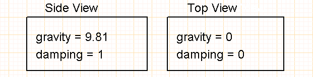

Simulator
WinRelay integration
-
The simulator is active by default. Activation sets WinRelais to the following parameters (Tools/Options) :

-
The k key displays/hides textures applied to simulatable objects:

-
To launch the simulator, click on the icon:

-
right-click on a simulable object to :
- edit its properties,
- rotate synoptic and cylinder objects to the nearest degree.

Restrictions
Numerical Model
- Mechanical loads applied to actuators (cylinders, motors) are fixed. They correspond to the actuators' nominal operating point.
- Current and voltage transients are not simulated.
- The maximum acquisition frequency of the measuring equipment is limited to 50Hz (1 measurement every 20 ms).
- Measurements are given in RMS or mean value only.
drawing editing
- At present, there is no 'tool' for converting previous schematics into simulable schematics.
- Line width for conductors is fixed.
- Only the 'Arial' font is supported.
- Left' text alignment only.
- Bold and italic characters are transformed into normal characters.
- Frames and leaflets are not drawn in the simulator.
- Only one symbol size can be used: 'normal'.
Editing symbols in WinSymbol
Some of the graphical features offered by WinSymbol are not taken into account by the simulator: - No Bézier curve, no text, unfilled circle only, - Fixed contour thickness - No SVG graphics - No background image - No mini-drawings.
Symbol editing anomaly

- Occasionally, when a symbol is rotated in WinRelais, the collision texture and shape may shift. In this case, it is necessary to re-center the symbol's origin in WinSymbol. the symbol origin in WinSymbol (see page 17 on the question of the barycentre).
- It is preferable to carry out the rotation in WinSymbol, carefully adjust the barycenter and then save the symbol for reuse.
General configuration blocks

This block adjusts certain display details of the current folio, and is mainly used for fine-tuning purposes:
- collisions = (False/True): displays collision patterns of physical objects,
- sensors_collisions = (False/True) : displays collision shapes of sensors and limit switches,
- wrs_equips** = (False/True): displays equipotential numbers defined by the simulator,
- wr_equips** = (False/True) : displays equipotential numbers defined in WinRelais,
- terminals_nums** = (False/True) : displays device terminal numbers.

The World_Settings blocks define the behavior of the 2D physics engine. It is possible to adjust the motor in : - Top view: gravity is not taken into account, - Side view: gravity is taken into account. Only one World_Settings block can be placed per folio. It is possible to have different views from one folio to another, for example : - one folio with a physical space described in top view, - the next folio with a physical space described in side view. The 'damping' coefficient, between 0 and 1, simulates air friction on a moving object.